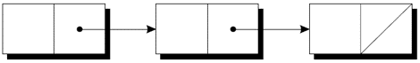
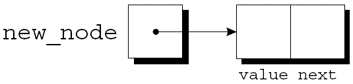
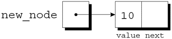
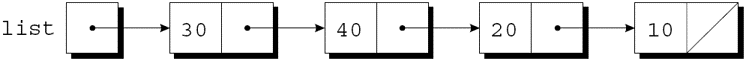
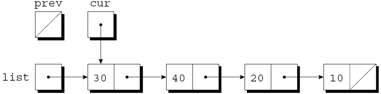

链表: 结点 + 指针串起来
声明结点类型与创建结点
插入、搜索、删除
案例: 零件数据库(改进版)
动态存储分配对于构建链表、树、图形和其他链接数据结构特别有用.
链表由一系列结构(称为结点)组成, 每个结点都包含指向链中下一个结点的指针:

链表中的最后一个结点包含一个空指针.
链表比数组更灵活: 我们可以轻松地在链表中插入和删除结点, 允许链表按需扩大和缩小.
另一方面, 我们失去了数组的"随机访问"能力:
可以在相同的时间内访问数组的任何元素.
如果结点靠近链表的开头, 则访问链表中的结点很快, 如果靠近链表的尾端, 则访问速度较慢.
要建立一个链表, 首先需要一个代表单个结点的结构.
结点结构将包含数据(在本例中为整数)以及指向链表中下一个结点的指针:
struct node {
int value; /* data stored in the node */
struct node *next; /* pointer to the next node */
};node必须是结构标记, 而不是typedef名称, 否则将无法声明next的类型.
接下来, 需要一个始终指向链表中第一个结点的变量:
struct node *first = NULL;
将first设置为NULL表示链表最初为空.
构建链表时, 需要逐个创建结点, 并添加到链表中.
创建结点的步骤:
为结点分配内存.
在结点中存储数据.
将结点插入到链表中.
现在集中介绍前两个步骤.
创建结点时, 需要一个临时指向该结点的变量:
struct node *new_node;
用malloc为新结点分配内存, 将返回值保存在new_node中:
new_node = malloc(sizeof(struct node));
new_node现在指向一个刚好足以容纳结点结构体的内存块:

接下来, 将数据存储在新结点的value成员中: (*new_node).value = 10;
赋值后:

*new_node周围的括号是强制要求的, 因为.运算符优先于*运算符.
-> 运算符 为了便于使用指针访问结构体的成员, C提供了名为右箭头选择(->)的运算符.
使用->运算符:
new_node->value = 10;
来代替
(*new_node).value = 10;
->运算符产生一个左值, 可以在任何允许普通变量的地方使用它.
scanf调用中的示例:
scanf("%d", &new_node->value);
&运算符仍然是必需的, 即使new_node是一个指针.
链表的优点之一是可以在链表中的任何位置添加结点.
但是, 链表的开头是最容易插入结点的地方.
假设new_node指向要插入的结点, first指向链表中的第一个结点.
将结点插入链表需要两个语句.
第一步是修改新结点的成员next, 使其指向之前在链表开头的结点:
new_node->next = first;
第二步是使first指向新结点:
first = new_node;
即使链表为空, 这些语句也有效.
让我们跟踪将两个结点插入一个空链表的过程.
首先插入一个包含数字10的结点, 然后插入一个包含20的结点.
for (p = first; p != NULL; p = p->next)
…struct node *search_list(struct node *list, int n)
{
struct node *p;
for (p = list; p != NULL; p = p->next)
if (p->value == n)
return p;
return NULL;
}struct node *search_list(struct node *list, int n)
{
for (; list != NULL; list = list->next)
if (list->value == n)
return list;
return NULL;
}虽然while循环也可以搜索链表, 但for语句通常是首选.
访问链表中结点的循环, 使用指针变量p来跟踪"当前"结点:
这种形式的循环可用于在链表中搜索整数n的函数.
如果找到n, 该函数将返回一个指向包含n的结点的指针; 否则, 它将返回一个空指针.
该函数的初始版本:
还有很多其他的方法来编写search_list.
一种替代方法是消除变量p, 用list本身来跟踪当前结点:
由于list是原始链表指针的副本, 因此在函数中更改它没有损害.
for (cur = list, prev = NULL;
cur != NULL && cur->value != n;
prev = cur, cur = cur->next)
;将数据存储在链表中的一大优势是我们可以轻松删除结点.
删除结点包含3个步骤:
找到要删除的结点.
更改前一个结点, 使其“绕过”已删除的结点.
调用free回收被删除结点占用的空间.
第1步比看起来更难, 因为第2步需要更改前一个结点.
这个问题有多种解决方案.
"追踪指针"技术涉及保持指向前一个结点(prev)的指针以及指向当前结点(cur)的指针.
假设list指向要搜索的链表, n是要删除的整数.
实现步骤1的循环:
当循环终止时, cur指向要删除的结点, prev指向前一个结点.
假设链表如下并且n为20:

执行完cur = list, prev = NULL后:

当链表的结点是有序的——按结点中的数据排序——我们称该链表是有序链表.
向有序链表中插入结点更加困难, 因为结点并不总是放在链表的开头.
但是搜索会更快: 在到达期望结点应该出现的位置后, 就可以停止查找.
struct part {
int number;
char name[NAME_LEN+1];
int on_hand;
struct part *next;
};*inventory2.c*程序是对第 16 章零件数据库程序的修改, 这次数据库存储在一个链表中.
使用链表的优点:
无需限制数据库的大小.
数据库可以很容易地按零件编号排序.
在原始程序中, 数据库没有排序.
part结构将包含一个额外的成员(指向下一个结点的指针):
inventory将指向链表首结点:
struct part *inventory = NULL;
新程序中的大多数函数与原始程序中的版本非常相似.
find_part和insert会更复杂, 因为将按零件编号对链表inventory中的结点进行排序.
struct node *next; 中，为什么结构体里能出现指向自己的指针？p->value 等价于什么（用 * 和 . 表示）？